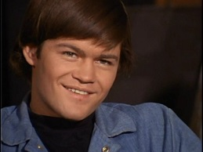
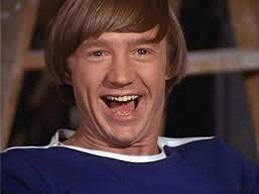
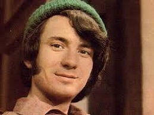

Micky
Micky
Dolenz
(born March 8, 1945)
More text here

Peter
Peter
Tork
(Feb 13, 1942 – Feb 21, 2019)
more text here

Michael
Michael
Nesmith
(born Dec 30, 1942)
more text here

Davy
Jones
(30 Dec 1945 – 29 Feb 2012)
more text here